Reasoning
Reasoning 两讲的主线可以概括成：
reasoning 不只是一个 prompt trick，而是 decoding、RL training、test-time compute、long-context ability 共同作用的结果。
Decoding during inference
Autoregressive LM 在每一步都会给出下一个 token 的分布：
Decoding algorithm 决定如何从这个分布中选择下一个 token。
最基本的选择方式：
- Greedy decoding
- 每一步选择概率最大的 token
- 计算简单，可复现
- 缺点是 myopic，只做 local optimum
- Beam search
- 每一步保留 top-\(k\) 个 partial hypotheses
- 当 \(k=1\) 时退化成 greedy decoding
- 在传统 NLP 里常用，但现代 LLM 里不是默认选择
- Sampling
- 从概率分布中采样
- 更适合开放式生成和需要多样 reasoning paths 的任务
Important
Decoding 不是模型参数的一部分，而是 inference-time 的选择策略。
Neural text degeneration
一个反直觉现象是：最可能的 sequence 不一定是最自然的 sequence。
高概率文本可能出现 repetition / looping：
在 reasoning models 里，looping 仍然可能出现，尤其是：
- temperature 太低
- 模型较小
- 题目较难
- reasoning trace 很长
所以 decoding 需要在 quality, diversity, coherence 之间做 tradeoff。
Top-k, Top-p and temperature
Vanilla sampling 的问题是：long tail 里有很多低概率但质量差的 token。单个 token 概率很低，但长文本生成时累计起来仍然可能被采到。
Top-k sampling：
- 只在概率最高的 \(k\) 个 tokens 中采样
- 简单直接
- 但固定 \(k\) 不适应不同分布形状
Top-p / nucleus sampling：
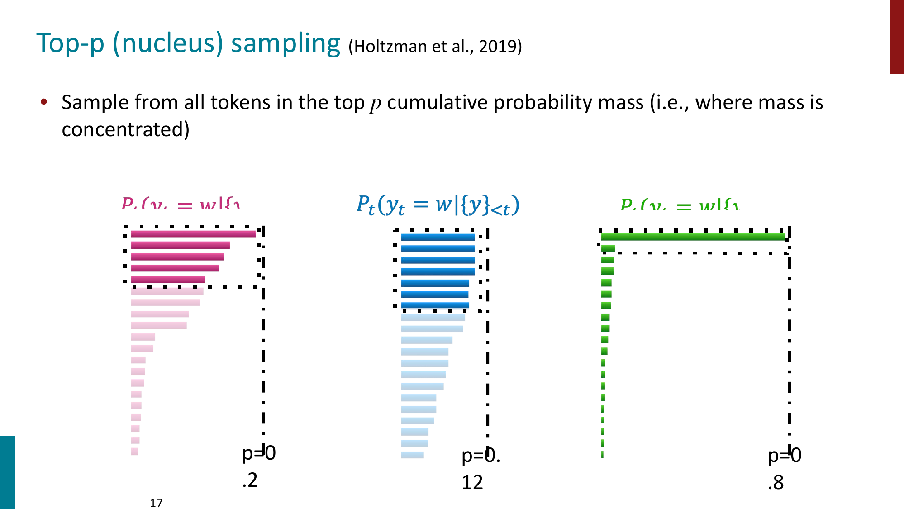
Top-p 不固定 token 数量，而是选择累计概率达到 \(p\) 的最小 token 集合：
然后只在 \(V_p\) 里采样。
Temperature sampling：
- \(T < 1\)
- distribution 更 sharp
- 更 deterministic
- \(T > 1\)
- distribution 更 flat
- 更多 diversity
Tip
Temperature 是 decoding hyperparameter，不是单独的 decoding algorithm。
Greedy vs sampling
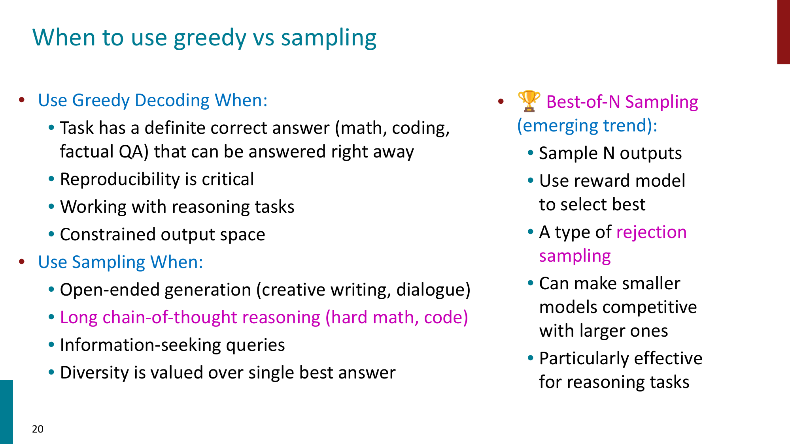
可以粗略记成：
- Greedy decoding
- factual QA
- coding / math 中有明确答案的问题
- constrained output
- 需要 reproducibility
- Sampling
- creative writing
- dialogue
- information-seeking
- long chain-of-thought reasoning
Reasoning 任务里一个常见趋势是 Best-of-N sampling：
这本质上是一种 rejection sampling，也是一种 test-time compute scaling。
DeepSeek R1-Zero and RLVR
R1-Zero 的重要点在于：它展示了 outcome-based RL 可以诱导 reasoning behavior。
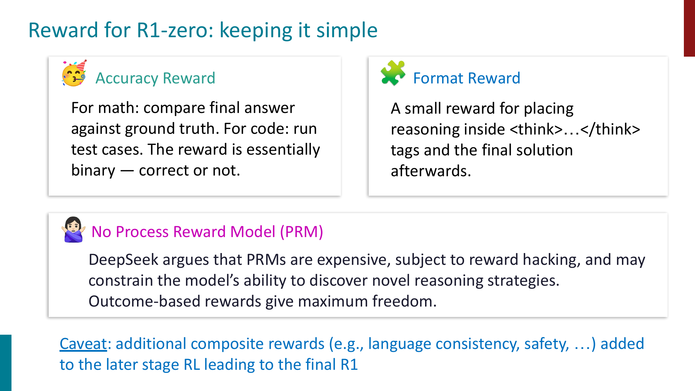
R1-Zero 的 reward 设计比较简单：
- Accuracy reward
- math 对 final answer
- code 跑 test cases
- reward 基本是 binary correct / incorrect
- Format reward
- 鼓励模型把 reasoning 放在
<think>...</think>中
- 鼓励模型把 reasoning 放在
- No Process Reward Model
- 不显式奖励每一步推理
- 给模型更大探索空间
Important
RLVR 的关键是 verifiable reward。它适合 math / code 这类答案可验证的问题，但不容易直接覆盖 open-ended generation。
Emergent reasoning behaviors
R1-Zero 中出现了一些 emergent behaviors：
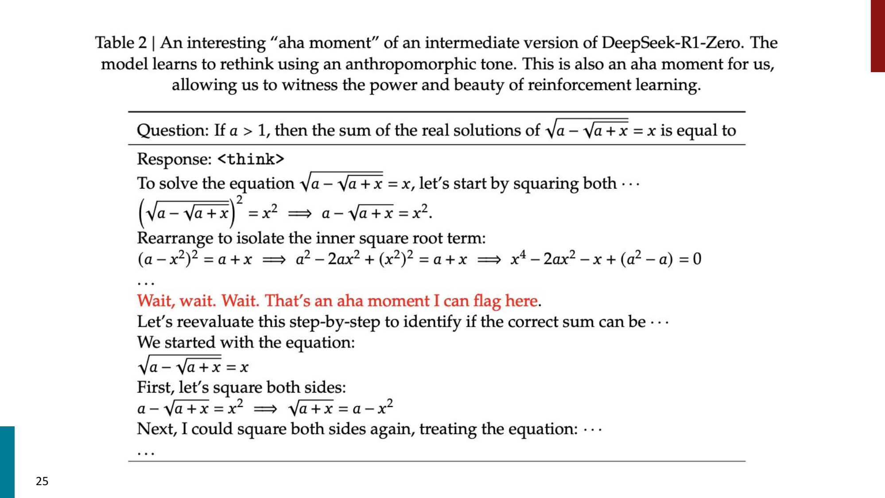
- Self-verification
- 模型会检查自己的中间结果
- Reflection and backtracking
- 发现当前路线不对后重新尝试
- Extended deliberation
- response length 增长，模型学会在难题上花更多 thinking tokens
但 R1-Zero 也有明显缺点：
- reasoning trace 可读性差
- 容易 code switching
- 对 verifiable domains 更有效
- 不会自动学到 general safety guardrails
所以最终 R1 仍然需要 SFT + RL 的多阶段 pipeline。
R1 takeaways
课件中对 R1 系列的发现可以总结为：
- RL alone 可以诱导 reasoning，但并不等于最终系统只靠 RL
- Outcome reward 给模型探索空间，process reward 可能限制 unconventional path
- RL 和 SFT 是互补的
- RL 发现能力
- SFT 提供稳定性和可读性
- 对小模型来说，distillation 往往比直接做 RL 更有效
- Test-time compute 可以被模型 internalize
- 模型学会什么时候多想、想多久
PPO, GRPO and DAPO
PPO 在 RLHF 中很经典，但训练复杂度很高：
- 要维护多个模型
- current policy
- old policy
- reference policy
- value network
- reward model
- 需要 value function 做 advantage estimation
- GAE 需要每个 token 位置的 value estimate
- policy 和 value network 都要训练
GRPO 的核心简化是：对同一个 prompt 采样一组 responses，用组内 reward 的相对高低来估计 advantage。
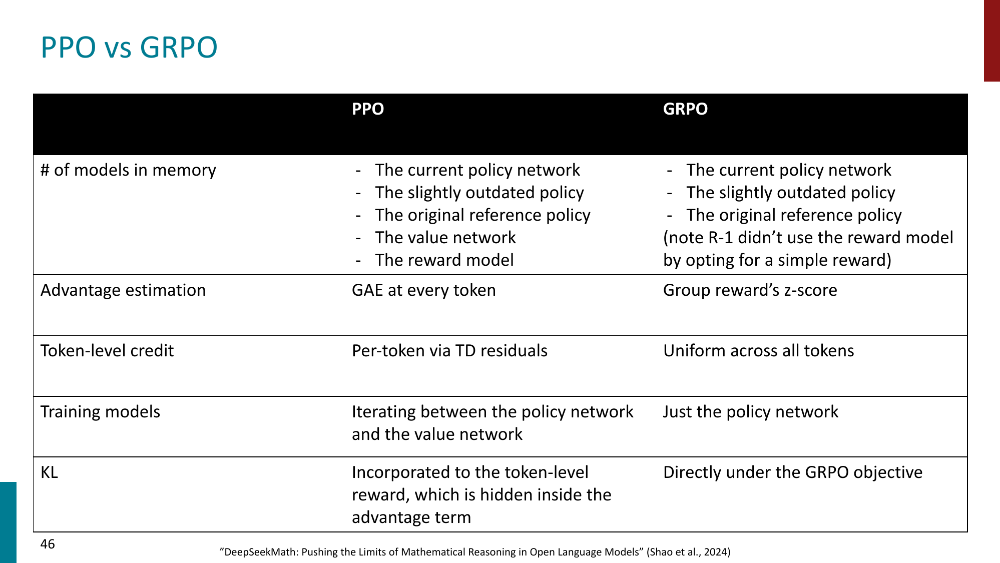
可以把 GRPO 粗略理解为：
其中 \(G\) 是同一个 prompt 下生成的 response group。
相比 PPO：
- 不需要单独训练 value network
- advantage 来自 group reward z-score
- KL 更直接地放在 objective 里
- 对 RLVR 场景更轻量
DAPO
DAPO 是在 GRPO 类方法上的工程化改进，课件强调了三个技巧：
- Clip-higher
- 放宽 upper clipping
- 减少 entropy collapse，允许更多探索
- Dynamic sampling
- 如果同一组 responses 全对或全错，梯度信号很弱
- 只保留同时有 correct 和 incorrect 的 groups
- Token-level loss
- GRPO 按 sample 平均，长 CoT 中每个 token 的梯度贡献会变小
- DAPO 改成 token-level averaging
Tip
GRPO / DAPO 的动机不是“理论上更优雅”，而是让大规模 reasoning RL 更可训练、更省资源。
Why chain-of-thought works
CoT 的效果不是所有模型都有。
- 大模型上 CoT 往往显著提升 reasoning
- 小模型可能生成 illogical reasoning chains
- Self-consistency 通过多条 reasoning paths + majority vote 进一步提升效果
一种解释是：pretrained LLM 中本来就存在 reasoning paths，只是 greedy decoding 不一定能把它们显现出来。
CoT prompting / CoT decoding 做的事情是：
也就是说，reasoning ability 可能部分存在于模型分布中，但需要合适的 decoding / prompting / sampling 才能被访问。
Cognitive behaviors
课件中提到，自我提升型 reasoning models 往往具备一些 cognitive behaviors：
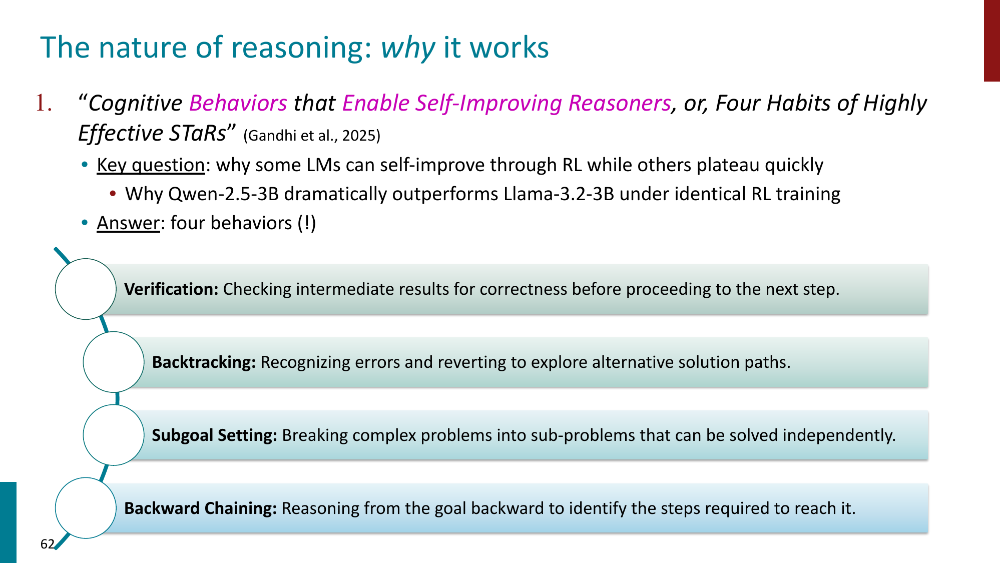
- Verification
- 检查中间结果是否正确
- Backtracking
- 发现错误后回退并尝试新路线
- Subgoal setting
- 把复杂问题拆成子问题
- Backward chaining
- 从目标反推需要哪些步骤
这里的重点是：
不是只有 final answer correctness 重要，reasoning behavior 本身也会影响模型能不能通过 RL 继续提升。
When reasoning fails
Reasoning trace 并不总是 faithful。
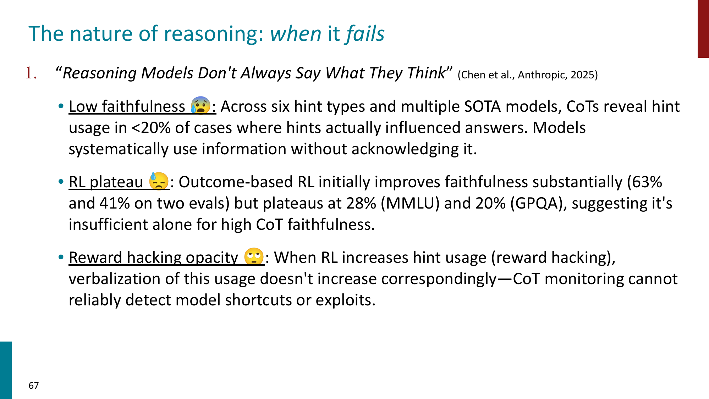
模型可能：
- 使用了 prompt 中的 hint，但 CoT 中不承认
- reward hacking 了某些 shortcut，但 reasoning trace 看起来正常
- 给出 plausible explanation，但真实决策原因并不是这条 explanation
Warning
Chain-of-thought 可以帮助模型解题，但不能简单地被当成模型真实内部推理过程的透明窗口。
另外，CoT 也不是所有任务都适用。有些任务中，额外 thinking 可能引入过度分析，反而降低表现。
Speculative decoding
Part 2 首先讨论 inference efficiency。
Speculative decoding 的问题背景是：
大模型生成慢，但不是每个 token 都同样难生成。
基本思想：
- 用小模型作为 draft model
- 一次提出多个 candidate tokens
- 用大模型作为 target model
- 验证这些 tokens 是否可以接受
- 如果通过，就一次性前进多个 tokens
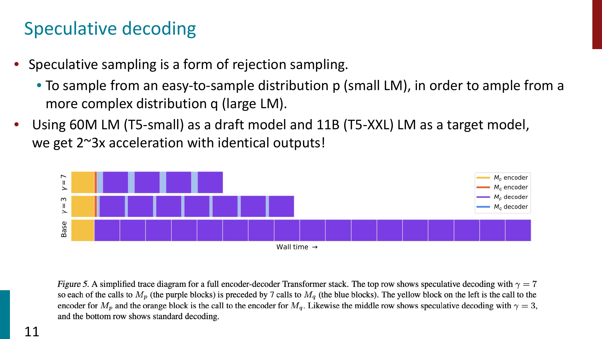
Speculative decoding 本质上是一种 rejection sampling。
关键性质：
- 输出分布仍然等价于 target model sampling
- 如果 draft model 和 target model 经常一致，就能显著加速
- 经典 draft-target 方法要求 tokenizer 兼容
- dynamic / universal speculative decoding 进一步放宽了 lookahead 和 tokenizer 限制
Online, offline, on-policy and off-policy
RL 里的几个概念容易混：
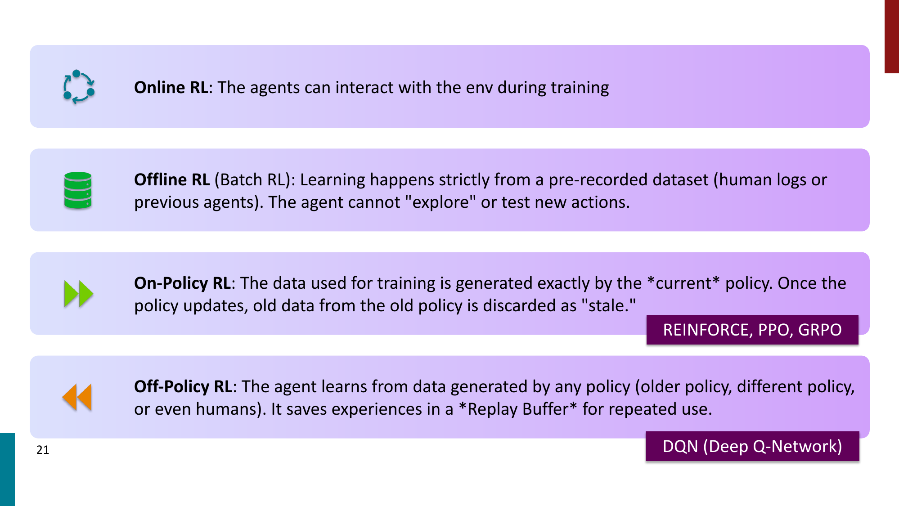
- Online RL
- training 时 agent 可以和 environment 交互
- Offline RL
- 只能从预先收集的数据学习，不能探索新 actions
- On-policy RL
- training data 来自当前 policy
- policy 更新后，旧 rollouts 就 stale
- Off-policy RL
- 可以从旧 policy、其他 policy 或 human data 里学习
- 常配合 replay buffer
在 LLM RL 训练中，即使算法目标是 on-policy，也可能因为工程系统产生 off-policy drift。
Off-policy drift
Off-policy drift 出现的原因包括：
- asynchronous RLHF
- generation 和 training 分离在不同 GPU clusters
- rollout 生成慢，policy 更新快
- 一个 batch 上做多次 gradient steps
- weight transfer 有延迟
问题是：
- gradient estimate 变 biased
- importance weights 可能爆炸
- reward hacking 可能被放大
缓解方法：
- PPO clipping
- KL penalty against reference policy
- 减少 epochs
- 更快的 weight streaming / in-flight updates
- 使用更短 off-policy window 的算法，例如 GRPO / REINFORCE
On-policy distillation
Standard knowledge distillation 通常是 teacher-centric，因此对 student 来说是 off-policy。
On-policy distillation 则是 student-centric：
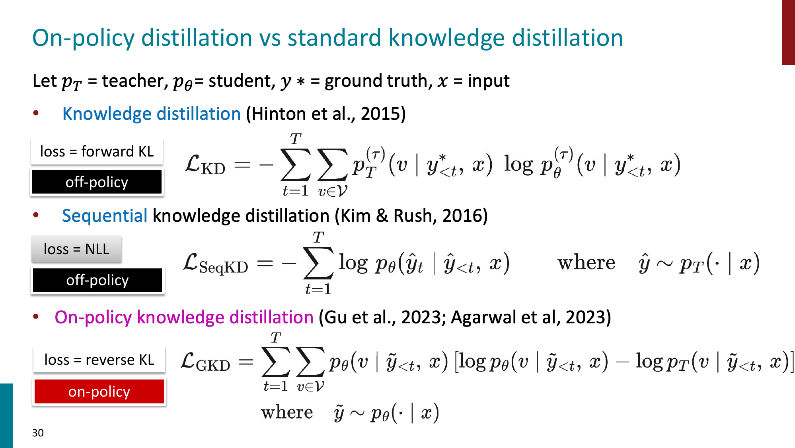
区别可以粗略记成：
- KD
- forward KL
- ground-truth / teacher context
- mass-covering
- off-policy
- SeqKD
- NLL on teacher-generated output
- teacher-generated context
- off-policy
- GKD / on-policy distillation
- reverse KL
- student-generated context
- mode-seeking
- on-policy
On-policy distillation 的好处：
- 减少 train-test mismatch
- 让 student 学会从自己的错误上下文中恢复
- 比 RL 便宜，因为有 dense teacher signal
- 比普通 SFT 更接近真实推理时的 student distribution
Important
On-policy distillation 可以看成 SFT 和 RL 的折中：它使用 on-policy samples，但监督信号比 sparse reward 更 dense。
Long-context reasoning
Scaling reasoning 往往也需要 scaling context length。
长上下文能力重要的场景：
- code repository 理解
- legal document analysis
- long interaction history
- multi-document QA / summarization
- 长数学推理和多次 trial-and-error
长上下文难点：
- Data limitation
- 训练语料里超长文档相对少
- Compute and memory limitation
- standard attention 是 \(O(n^2)\)
- Position generalization
- 短上下文训练的 positional embeddings 不一定能外推到长位置
RoPE
RoPE 的核心思想是：不是把 positional embedding 加到 token embedding 上，而是在 attention 中旋转 \(Q\) 和 \(K\)。
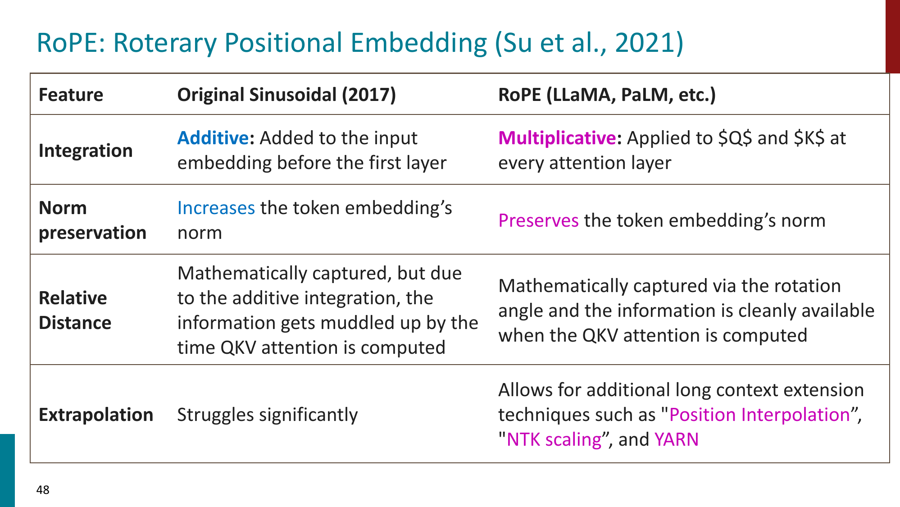
RoPE 的特点：
- multiplicative integration
- 作用在每一层的 \(Q,K\) 上
- 保持向量 norm
- 更干净地编码 relative distance
- 支持后续长上下文扩展技术
常见 long-context extension practices：
- Position interpolation
- 把长位置压缩到模型熟悉的位置范围
- NTK-aware scaling
- 调整 RoPE frequency base
- YaRN
- 结合 NTK scaling、attention temperature correction 和 frequency ramp
- Progressive training
- 逐步从 8K 训练到 32K / 64K / 128K
- Data engineering
- 增加 books、code repos、long documents、synthetic long-context tasks
- Attention architecture
- sliding window / sparse attention
- FlashAttention
- GQA / MQA 降低 KV cache 成本
Test-time compute scaling
Test-time compute scaling 的核心问题是：
与其只训练更大的模型，能不能在推理时让模型“多想一会儿”？
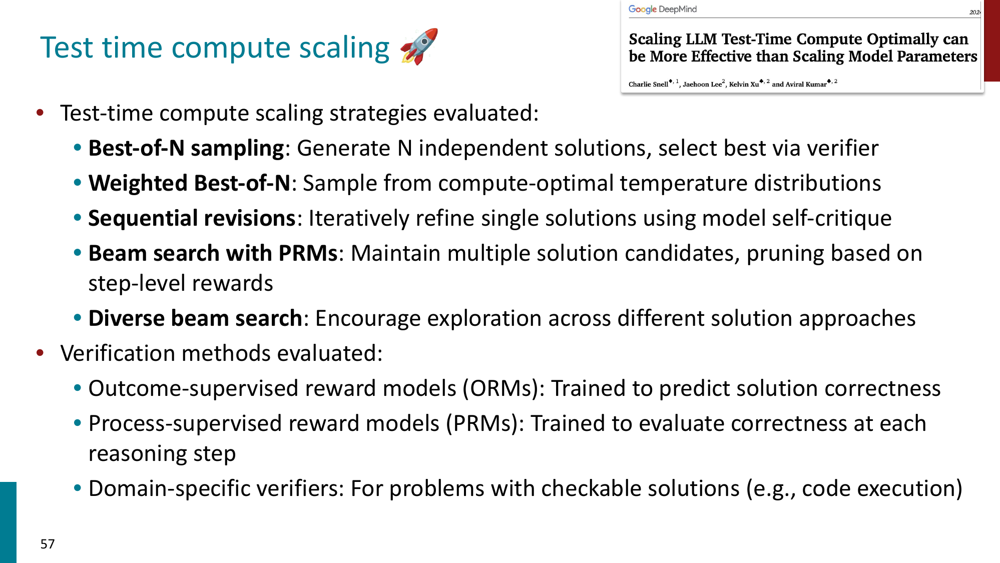
常见方法：
- Best-of-N sampling
- 生成 \(N\) 个答案，用 verifier 选最优
- Weighted Best-of-N
- 用 compute-optimal temperature 分布采样
- Sequential revision
- 让模型迭代修改自己的答案
- Beam search with PRMs
- 用 process reward model 评估每一步
- Diverse beam search
- 鼓励探索不同解法
Verifier 也很关键：
- ORM
- outcome-supervised reward model
- 判断最终答案是否正确
- PRM
- process-supervised reward model
- 判断每一步 reasoning 是否合理
- Domain-specific verifier
- code execution / math checker 等可验证工具
Test-time scaling takeaways
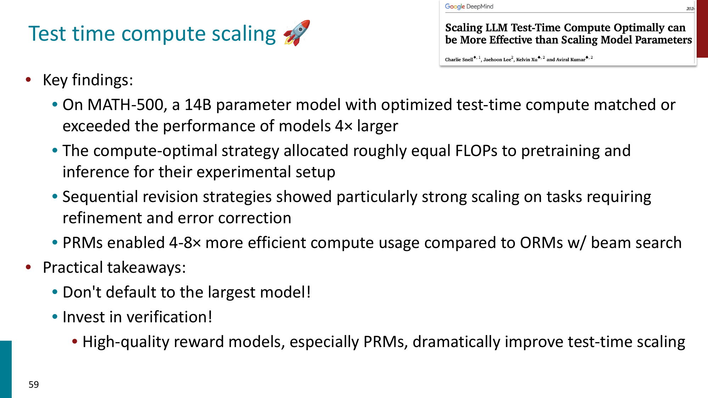
主要结论：
- 不是默认选择最大模型就最优
- 小模型 + optimized test-time compute 可能接近或超过更大模型
- 需要在 model size 和 inference compute 之间分配预算
- 高质量 verifier 很重要
- PRM 在 step-level search 中通常比只看 final answer 的 ORM 更高效
可以把 reasoning system 的能力理解为：
Summary of Reasoning
- Decoding 决定 inference 时如何从 token distribution 产生文本
- Greedy / beam search 更确定，sampling 更有 diversity
- Top-k / top-p / temperature 都是在控制 sampling space
- Reasoning models 仍然可能 looping，尤其是在低温、小模型、难题和长 reasoning trace 下
- R1-Zero 说明 outcome-based RL 可以诱导 reasoning behavior
- RLVR 依赖 verifiable reward，更适合 math / code 等可验证任务
- PPO 强但复杂，GRPO 通过 group-relative reward 简化 advantage estimation
- DAPO 进一步处理 exploration、有效 batch 和长 CoT token weighting
- CoT 能显现 latent reasoning paths，但 CoT 不一定 faithful
- Speculative decoding 用小模型 draft、大模型 verify 来加速生成
- LLM RL 工程中常出现 off-policy drift，需要算法和系统一起缓解
- On-policy distillation 用 student-generated contexts 和 dense teacher signal 结合 SFT / RL 优点
- Long-context reasoning 需要 positional encoding、训练数据和 attention efficiency 共同扩展
- Test-time compute scaling 把更多预算放在 sampling、revision、search 和 verification 上